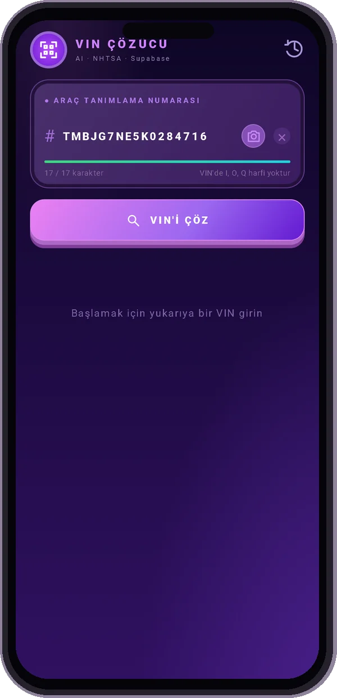
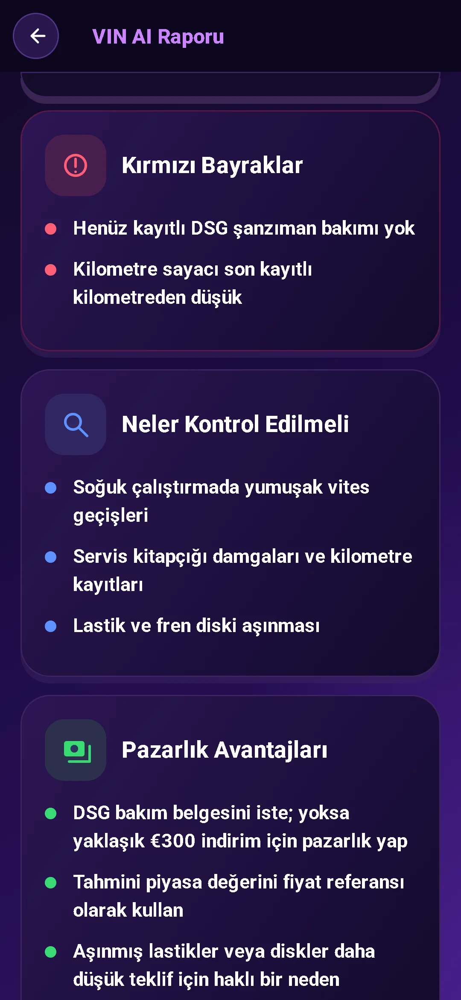
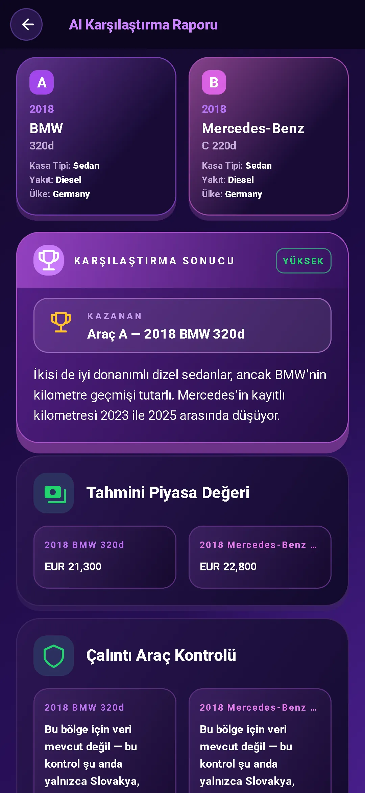

VIN’i tara
Kameranızı VIN'ye doğrultun veya yazın. Aracın temel özelliklerini ücretsiz olarak VIN ile kontrol ederek başlayın.
O kullanılmış arabanın bir hikayesi var. VIN ile başlayın.
Teknik özellikleri alın, tehlike işaretlerini tespit edin ve hazırlıklı bir şekilde sohbete katılın.
Rapor önizlemesi kilitli. Veri kullanılabilirliği araca ve kaynağa göre değişir.
Google Play’den indirÜcretsiz VIN kod çözme. $3.99 tam yapay zeka raporu. Abonelik yok.

VIN aramasının ötesine geçin. Ayrıntıları sorulmaya değer sorulara dönüştürün.
Kameranızı VIN'ye doğrultun veya yazın. Aracın temel özelliklerini ücretsiz olarak VIN ile kontrol ederek başlayın.
Motoru, donanımı, çekiş sistemini ve diğer özellikleri incele. NHTSA geri çağırmalarına, araç sahibi şikâyetlerine ve çarpışma puanlarına, ayrıca EPA yakıt tüketimi verilerine bak.
Piyasa değeri ve kilometre bilgilerine bakın. Pazarlığa başlamadan önce istenen fiyatı bağlam içine koyun.
Yapay zekâdan satın al, dikkatli ol veya vazgeç önerisi al. İnceleme puanını, olası zayıf noktaları ve aracı görürken kontrol etmen gerekenleri öğren.
Satıcıya daha iyi sorular getirin. Bir sonraki hamlenizi planlamak için inceleme tavsiyelerini ve müzakere ipuçlarını kullanın.
Fotoğraflar hakkında da dahil olmak üzere AI asistanıyla sohbet edin. Desteklenen 10 dilden herhangi birinde ayrıntıları anlama konusunda yardım alın.


İki aracı yan yana karşılaştır. Teknik özelliklerini ve yapay zekâ analizlerini birlikte inceleyerek aracı görmeye gitmeden önce artıları ve eksileri değerlendir.
Ön camda, kapı pervazında veya araç belgelerinde 17 karakterli VIN'yi bulun.
Kodu çözülen teknik özellikleri inceleyin ve riskler, sorular ve pratik tavsiyeler içeren bir yapay zeka raporu alın.
Doğru soruları sor. Kayıtları doğrula. Satın almadan önce bağımsız bir inceleme yaptır.
Bir kerelik satın alma. Aboneliğe gerek yok.
Sadece temel bilgilere mi ihtiyacınız var? VIN kod çözme uygulamada ücretsizdir.
Bir sonraki arabanızı kontrol etmeden önce ne alacağınızı bilin.
Araç kimlik numarası (VIN), modern araçlarda kullanılan 17 karakterlik benzersiz bir tanımlayıcıdır. VIN kod çözücü, bu tanımlayıcıyı model, motor ve aktarma organları gibi araç özelliklerine dönüştürür.
Sürücü tarafındaki ön camın alt kısmına, sürücü kapısı pervazına veya araç tescil ve sigorta belgelerine bakın. Uygulamada kameranızla tarayın veya yazın.
Tam yapay zekâ raporu; çözümlenen araç özelliklerini, satın al / dikkatli ol / vazgeç önerisini, inceleme puanını, risk işaretlerini, kontrol edilecek noktaları, satıcıya soruları ve pazarlık önerilerini içerir. Uygulamada ayrıca piyasa değeri ve kilometre bilgileri, NHTSA güvenlik geri çağırmaları, araç sahibi şikâyetleri ve çarpışma puanları ile EPA yakıt tüketimi verileri bulunur. Kapsam ve kullanılabilirlik araca ve veri kaynağına göre değişir.
Temel VIN kod çözme uygulamada ücretsizdir. Tam bir AI raporunun maliyeti tek seferlik satın alma olarak $3.99'dir ve abonelik gerekmez.
Bunu arabanız için mi istiyorsunuz? Uygulamaya kendi VIN'nizi girin.
Google Play’den indirÜcretsiz temel kod çözme · $3.99 tam AI raporu · Abonelik gerekmez